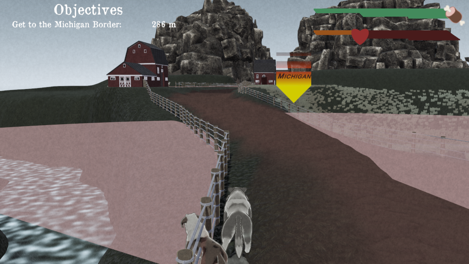
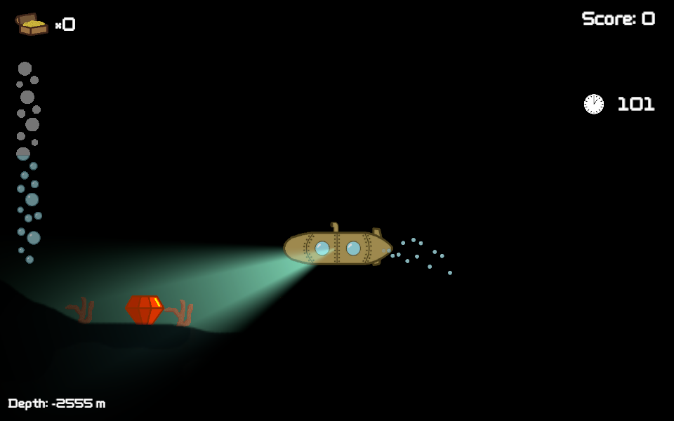

Game Development Projects
Below is a list of game development projects I have completed as a team. They are listed in chronological order, from most recent to least recent.
Salmon Run
Salmon Run is an educational game that simulates salmon runs, where salmon migrate upstream in order to spawn. It allows middle school students to learn about the effects of environmental and man-made elements on the salmon population, as well as their effects on the overall genetics of the population.
This marks the first project where I inherited an existing project rather than creating one from scratch. As such, I needed to be read and understand the existing code in order to add additional features and make improvements. Throughout my studying of the code, I learned a few concepts that I didn't know about before. The most important concept learned was the use of global events to avoid excessive amounts of references. I also identified some areas of improvement, and I made sure to confirm with my employers before making the changes.
In addition, I was tasked with implementing several complex features, one of which was the implementation of save files. As Salmon Run is a browser-based game, it cannot have direct access to the user's computer. Therefore, some compromises to my employers' original vision were required, and those compromises were explained to my employers. We arrived at a solution after a few discussions, which highlights the improvements to my social skills over my career as a student.
Shotgun Slime
In Shotgun Slime, you control a slime spawned from a nuclear accident that has access to firearms. You play with your friends in an endless, non-stop tournament, with multiple weapons and levels. Your goal is to defeat the other players' slimes and be the last slime standing at the end of each round. Each level has a unique gimmick as well, ranging from explosive barrels to death lasers. Weapons are designed to reward risk-taking and constant movement, as well as creativity to create combos with both equipped weapons. The game can support up to four local players, and supports both keyboard/mouse controls and gamepad controls.
During the development of Shotgun Slime, my team and I focused on refining the game experience as much as possible. We did so primarily through the usage of playtesting, where we gathered feedback from other game developers in our cohort. As a result, I gained valuable experience I can apply to future playtesting sessions on other projects, as well as a demonstration on the merits of playtesting.
In addition, my experience from past projects had allowed me to integrate with my team to a fuller degree, which avoided some of the hiccups from previous projects. For example, I have vastly improved my ability to explain to level designers how to best utilize my code. This avoids issues in the past where incorrect implementations of my code had lead to difficult to find bugs.
Vegetarian Alligator Bandit
Vegetarian Alligator Bandit is a turn-based tactical RPG where you lead five alligators on a mission to steal veggies from a farmstead using a combination of stealth, combat, and trickery.
Vegetarian Alligator Bandit showed me that proper planning is important when developing games. Due to the rather large scope of the project in relation to its development time, I deemed it necessary to cut corners and forgo proper planning. In addition, proper communication was not established with my group mates, leading to me developing code that was incompatible with the team's final vision of the project. The consequence of this arose in the form of a massive bug in the enemies' AI that was discovered hours before the project was due.
This project served to reinforce that which I had ignored, that proper communication, planning, scope management, and adequate playtesting is paramount to the continued success of a project.
Neon Oasis

Neon Oasis is a fast-paced hack and slash game where the player circles a massive boss, managing their fuel and speed as they dash around obstacles and attacks while chopping off parts of said boss. Brazenness is rewarded as fuel; the only way to regain fuel and keep moving is to attack the boss or by performing near misses with obstacles.
This was actually the first team where I was not the sole programmer (in fact, the team consisted entirely of programmers), and I learned how to integrate my code with those of others in a reliable, efficient, and timely manner. I was also able to learn and adopt more systems of coding for Unity. For example, we used a more event-based model for this project where previously I had relied on a manager based model, which proved to make implementation much more flexible.
Wolf in Ohio
Wolf in Ohio is a mission based survival/action game where the player plays as a lost wolf stranded in the treacherous state of Ohio. They must sneak around guard dogs in order to consume sheep to gain energy, get an item to a goal, avoid being mauled by the dogs, and more in order to escape to Michigan.
I worked as the sole programmer and was responsible for some of my code's implementation in terms of game design. I learned the importance of communication during this project, and I improved my communication ability with non-programmer members of my team in order for my code to be implemented easily and most efficiently.

This game was released to much appraisal from MSU (Michigan State University) game dev alumni, our classmates, and our instructors. It received a first place ranking from the alumni and tied for first place on our instructors' ranking.
Submarine Seeker
Developed during a game jam while I was a member of SpartaSoft, Submarine Seeker is a short two minute game where the player commandeers a submarine to collect sunken treasure at the bottom of the sea.
I designed the rotational style of movement for the player, implemented the URP lighting system, including the radar pings, as well as other various implementation details. It was particularly well received by other members of SpartaSoft.
Railgun Rampage
Developed during a two week long Prespec as a member of SpartaSoft, Railgun Rampage is a endless "on rails" shooter where you get to create your rails. Players drive a high-speed bullet train with two guns: a railgun to shoot enemies and a rail gun that shoots rails for the train to drive on. They must balance firing the railgun and the rail gun in order to both move from hazards and shoot at them.
This is the first game I have developed on a team and the first game I have developed to completion. I created the enemy behavior and spawning as well as the sprites for the player and enemies.
Personal Projects
This is a list of projects I have done by myself in order to learn new skills in Unity or as a grade for my classes. They are ordered in chronological order as was above.
Procedural Terrain Generation
This a procedural terrain generation demonstration using the Unity job system and the Burst compiler. This allows me to create multi-threaded code, which drastically improved the performance of the terrain generation from traditional single-threaded code.
In addition, the generator supports customizable noise profiles (called octaves) in order to fine-tune the overall shape of the generated terrain. This allows for the creation of rolling hills and sharp mountains, for example.
Finally, the generator moves with the player, reusing old terrain chunks by moving them so that the player remains surrounded by terrain on all sides. This drastically decreases memory utilization, all while maintaining the illusion of an infinite world.
I plan to improve this code over the summer, adding support for biomes, trees, and surface materials.